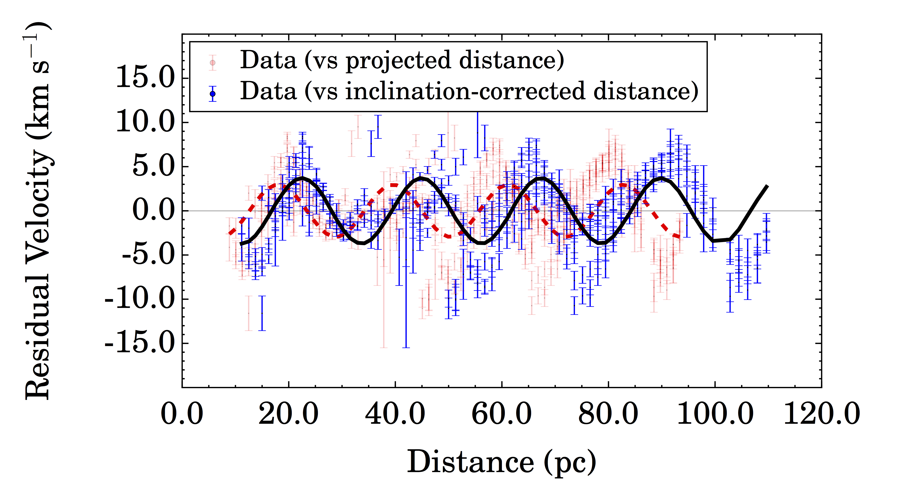
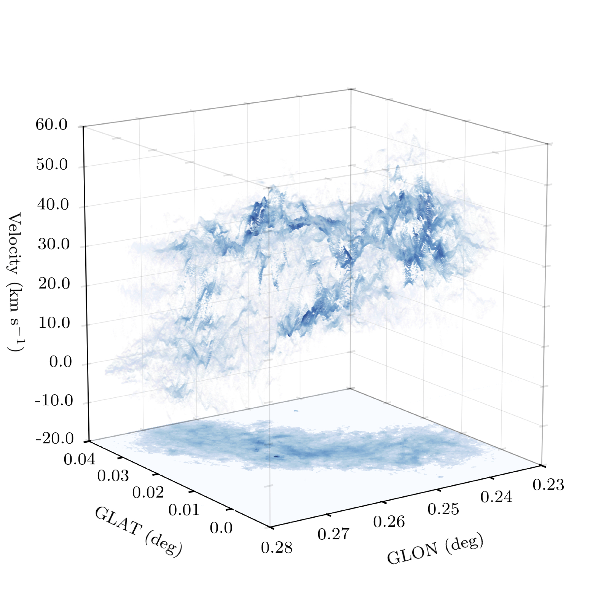

The Central Molecular Zone (hereafter, CMZ) of the Milky Way
(i.e. the central �~500 pc) contains some of the Galaxy’s densest and
most massive molecular clouds and star clusters, o�ffering an important
window into molecular cloud evolution under extreme physical
conditions. The interstellar medium (ISM) conditions found
in the CMZ di�ffer substantially from those found in the Galactic
disc. Molecular gas densities, pressures, temperatures, and
the turbulence, as well as the cosmic ray ionisation rate
and the interstellar radiation field, can be factors-of-several to orders of
magnitude greater than those found in the Milky Way's disc. Although the conditions
found in the CMZ are therefore often considered to be extreme in
the context of the Milky Way, it has been argued
they are comparable to those found in high-redshift galaxies
at the time of peak cosmic star formation rate. Consequently, understanding
stellar mass assembly in the CMZ may help to provide a
representative view of the conditions necessary for star formation
at its cosmic peak.
The 3D Geometry of the Central Molecular Zone

Figure 1: An {l, b, v} diagram highlighting the kinematic structure
of the Central Molecular Zone of the Milky Way. Each data point refers to
the location and velocity of an individual emission feature in the modelled
emission line profile performed using
scouse. The kinematics
are clearly complex. The complex velocity structure makes values
derived from e.g. moment analysis highly unreliable. Accurate
comparison between theory and observations therefore necessitates
suitably detailed methodology.
Prior to 2016, the kinematics of the Central Molecular Zone (CMZ) had been
described using a combination of position-velocity diagrams, channel maps, and moment
analysis. Although such techniques are simple to implement and well-understood,
their output can be subjective and easily misinterpreted in complex environments.
With this in mind, we developed
scouse -
a unique line-analysis tool designed
to accurately extract the kinematics of star forming regions.
We used SCOUSE to perform a comprehensive decomposition of the kinematics of the CMZ
(see Fig. 1). Comparing with theoretical models for the orbital geometry, this is now
helping to constrain the 3D structure of the gas. Modeling the 3D structure and
geometry of the CMZ is critically important to understanding star formation in this
complex environment, since it may be closely tied to the orbital dynamics.
Molecular gas kinematics
within the inner 250pc of the Milky Way, MNRAS, 457, 2675
The Onset of Molecular Cloud Formation in the Central Molecular Zone

Figure 2: Velocity oscillations detected in the Central Molecular Zone. This
oscillatory pattern is believed to be a signature of mass accretion towards a series of
young molecular clouds. These clouds are believed to be in a very early stage of their
evolution, still growing in mass and showing no evidence for embedded star formation.
Star formation within the CMZ may be intimately linked to the orbital dynamics of the gas.
Recent models suggest that star formation within some of the most massive clouds
in this region may follow an evolutionary time sequence. Given that these clouds are
the most likely precursors to a generation of massive stars and extreme star clusters,
this scenario would have profound implications for constraining the time-evolution of
star formation.
In 2016, we began a search for the initial conditions of these massive protocluster
clouds. We identified a series of clouds with masses around 10000x the mass of the sun.
The show no obvious signatures of active star formation and appeared to be regularly
spaced with a separation of ~10 parsecs. In addition, we identified an intriguing
velocity pattern in the molecular gas associated with these clouds (Figure 2). The
gas kinematics show a clear sinuoidal oscillatory pattern, the wavelength of which is
around ~20parsecs.
We suggested that the spacing of the clouds may be the result of gravitational
instabilities acting within the gas stream and that the oscillatory pattern may
be a signature of gas accretion towards the clouds. This indicates that they are
still in an early phase of their evolution and continue to gather mass from their
surroundings. If confirmed, these clouds may represent historical analogues of
some of the most massive molecular clouds in the Galaxy.
Seeding the
Galactic Centre gas stream: Gravitational instabilities set the initial conditions
for the formation of protocluster cloud, MNRAS, 463L, 122
"The Brick" is not a brick

Figure 3: An {l, b, v} diagram highlighting the kinematic structure
of the G0.253+0.016 (a.k.a. "The Brick"). Each data point refers to
the location and velocity of an individual emission feature in the modelled
emission line profile performed using
scousepy.
In this project we focussed on a comprehensive description of the internal dynamics
of G0.253+0.016 (a.k.a. 'the Brick’); one of the most massive and dense molecular clouds
in the Galaxy to lack signatures of widespread star formation. As a potential host
to a future generation of high-mass stars, understanding largely quiescent molecular
clouds like G0.253+0.016 is of critical importance.
We reanalysed ALMA cycle 0 HNCO data of 'the Brick' using two knew pieces of software
(scousepy and
acorns). We used
these tools to study this complex cloud's kinematics in detail. We provide an unbiased
measurement of the line of sight velocity dispersion in this cloud, 4.4 km/s, which
is somewhat larger than predicted by velocity dispersion-size relations for the CMZ.
The dispersion of centroid velocities across the plane of the sky are comparable.
This isotropy may encode important information about the cloud geometry. Our main
conclusion is that G0.253+0.016 is not a single, coherent, and centrally-condensed
molecular cloud as had been previously argued; ‘the Brick’ is not a brick. Instead,
G0.253+0.016 is a dynamically complex and hierarchically-structured molecular cloud
whose morphology is consistent with the influence of the orbital dynamics and shear
in the CMZ.
"The Brick"
is not a brick: A comprehensive study of the structure and dynamics of Central
Molecular Zone cloud G0.253+0.01, MNRAS, in press